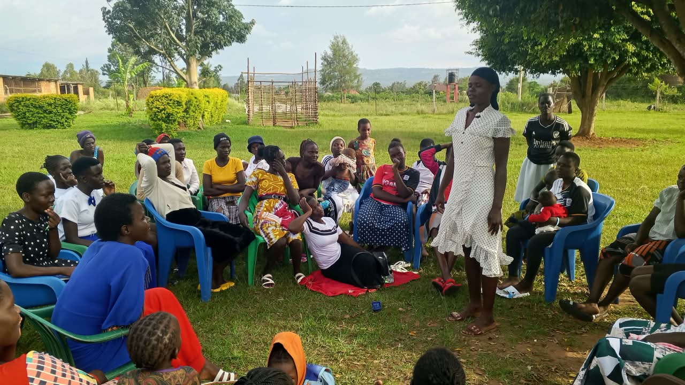
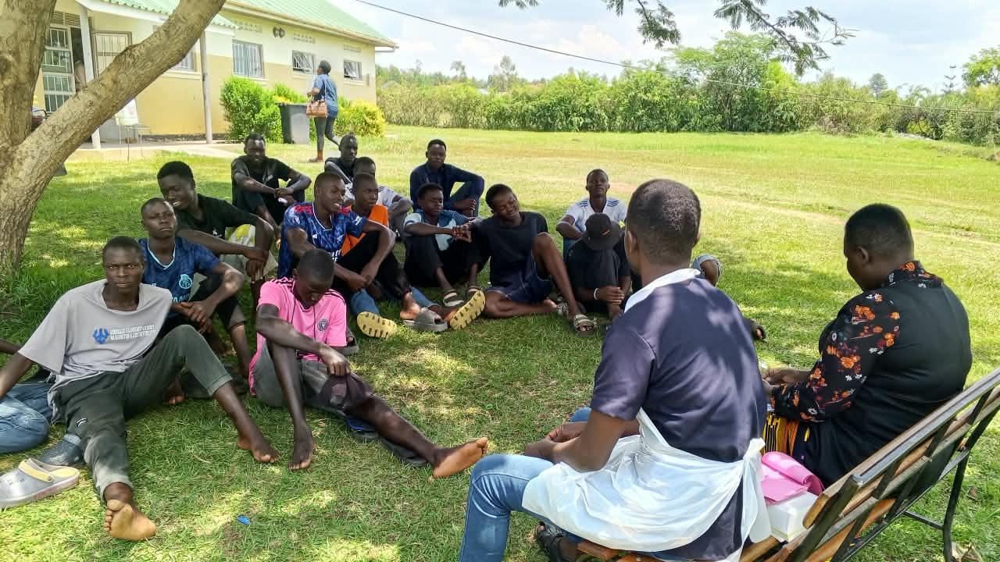
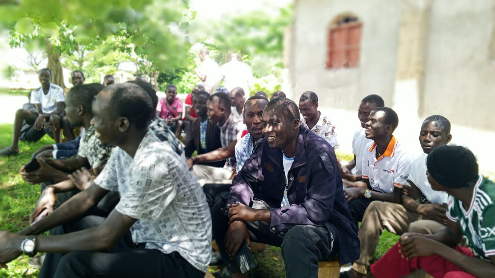
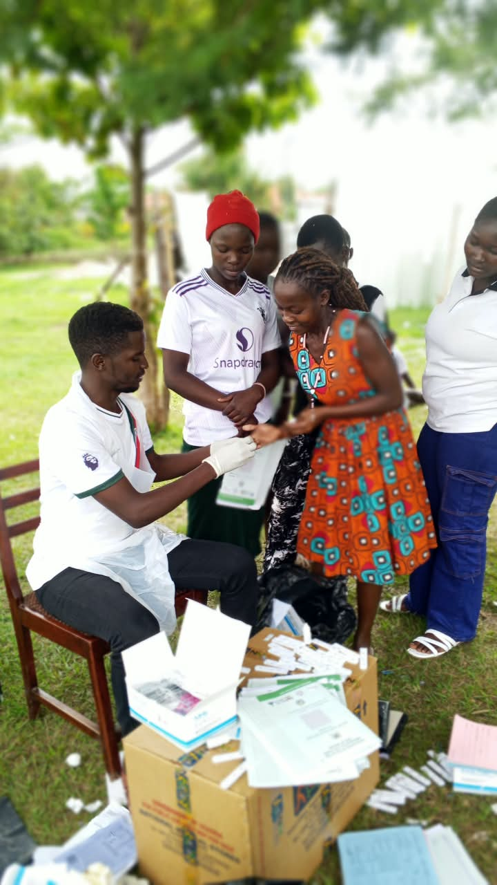

Young Mother
"I Finally Understood My Options"
A young mother shares how accessing reliable information helped her make informed decisions for herself and her baby during a difficult and frightening time.
Real experiences from young parents we have had the privilege to walk alongside. Every story published here has been shared with the full informed consent of the person involved.
Only stories and photographs shared with the explicit, informed, and written consent of the person involved are published on this page. Names and identifying details may be changed to protect privacy. If you would like to share your story, please contact us.

A young mother shares how accessing reliable information helped her make informed decisions for herself and her baby during a difficult and frightening time.

A teenage father describes how guidance and information from Hope 4 Teen Parents helped him step up for his child and partner.

How a community session brought together young parents, health workers, and community leaders around shared understanding and support.
A first-time young mother shares how she discovered the importance of antenatal visits — and what happened when she finally went.
A young father explains how learning about family planning changed how he supports his partner and plans for his family's future.

A community member reflects on how an open community health session broke down barriers and encouraged young parents to seek information.
More stories will be added as community members share their experiences with consent. Would you like to share yours?
Share Your StoryBehind every story is a real young parent who needed support and found it. Help us reach more young parents who are still looking.
When I found out I was pregnant, I was 17 years old. I did not tell anyone for two months. I was afraid — afraid of my parents, afraid of school, afraid of what people would say. I had many questions but no one to ask.
A friend told me about a session being organised by Hope 4 Teen Parents Uganda. I was not sure I wanted to go, but I went anyway, quietly, hoping no one I knew would see me.
When I arrived, I was surprised. No one judged me. The person leading the session spoke calmly and clearly. They explained what happens during pregnancy, why antenatal care matters, what warning signs to watch for. Things I had never heard before.
I learned that going to a health facility early was not something to be ashamed of — it was something that could protect my life and the life of my baby. That same week, I went for my first antenatal visit. The nurse was kind. She gave me information and vitamins and told me what to expect.
My baby was born healthy. I am still continuing with my education. I am not saying it has been easy — it has not. But knowing what I know now, and having people who supported me without judging me, made a difference I cannot fully describe.
I want other young mothers to know: there is a place you can go. There are people who will not shame you. Ask your questions. You deserve to know.
I was 18 when my girlfriend told me she was pregnant. My first feeling was fear. My second feeling was also fear. I did not know what to do. I did not know what it meant to be a father. No one had ever explained it to me.
I thought about running away. Many of my friends had done the same in similar situations. But something kept me there. I cared about her. I just did not know how to show it or what to do next.
I heard about a session for young fathers at Hope 4 Teen Parents Uganda. I remember sitting there with other boys my age and thinking — all of us are scared. All of us are confused. And nobody had told us that was okay.
The session talked about what a young father can actually do. Not big things — small things. Going with your partner to antenatal visits. Making sure she eats well. Understanding what she is going through physically and emotionally. Being present.
We also talked about sexual health, about HIV testing, about family planning after the baby arrives. Things I had never thought about but needed to know.
My child is now eight months old. I am still with my partner. We are not perfect and life is still hard, but I show up. I learned that showing up — even when you do not know everything — is what matters most.
Young fathers are not the enemy of this story. We just need information and support too.
In our community, young people who became parents were often spoken about in whispers. They were seen as a problem — something that had gone wrong. Nobody sat down with them and asked: what do you need? What do you know? What are you afraid of?
Hope 4 Teen Parents Uganda came to our area and asked if they could hold a community session. At first, some elders were not sure. Would it encourage wrong behaviour? But after talking with the organisers and understanding their approach — information, not promotion — they agreed.
The session brought together young parents, community health workers, and several community leaders. We sat together, outside, under the trees. Young people spoke. Elders listened. Health workers explained things clearly.
One moment I will not forget: a young mother stood up and said she had been carrying a question about her baby's health for three weeks but had no one to ask. She asked it there. The health worker answered it. Immediately, I could see the relief on her face.
That is what information does. It takes away fear. It gives people power over their own lives.
After that session, more young parents started going to the health facility. Parents became more open to letting their children ask questions. Even some fathers who had been absent started showing up.
Our village is not perfect. But that day, we came together for our young people. And that mattered.
Nobody told me. That is the truth. Nobody in my family told me that a pregnant woman should go to a health facility before the baby comes. I thought you only go when the baby is ready to come out.
I was five months pregnant before I went for my first antenatal visit. The nurse asked why I had waited so long. I told her honestly: I did not know.
At that visit, they found that I had anaemia — my blood was low. They gave me iron tablets and told me to come back every month. They checked the baby's position, listened to the heartbeat, and told me what signs to watch for that meant I needed to come immediately.
At six months, I felt one of those warning signs — severe headache and blurred vision. Because I knew now what this could mean, I went to the facility that same day. The nurse treated me for high blood pressure. She told me that if I had not come when I did, it could have been very dangerous for me and my baby.
After my baby was born, I started attending sessions organised by Hope 4 Teen Parents Uganda. I learned so much — about postnatal care, about breastfeeding, about family planning. Things every young mother should know.
I now tell every young woman I meet who is pregnant: go early. Go often. Do not wait. The information and the care you receive at that facility can save your life.
Before I attended a session with Hope 4 Teen Parents Uganda, I thought family planning was a woman's issue. Something she handled. Something the health facility gave her. Nothing to do with me.
I had my first child at 19. By 21 I had a second. Each time, the pregnancy was unplanned. Each time, I was not ready. And each time, I told myself it was just something that happened — not something I had any part in preventing.
At the session, a health worker asked us directly: how many of you think family planning is the woman's responsibility? Almost every hand in the room went up. Then she explained something I had never thought about.
Family planning is about two people making decisions together. A man who is informed about contraception, who supports his partner in using it, who understands spacing pregnancies — that man is not less of a man. He is a better father, a better partner, and a better provider.
She explained different methods, how they work, their safety, and how couples can discuss them together. For the first time, I felt like this conversation included me.
My partner and I talked about it properly for the first time after that session. We made a decision together. We are now planning when to have our next child — not just having it happen to us.
That shift — from family planning happening to us, to us making it happen — changed everything. I only wish someone had told me this years earlier.
In our community, certain topics were never spoken about openly. HIV. Pregnancy. Sexual health. Family planning. These were things people whispered about, or argued about, or stayed silent about entirely. Young people grew up with no real information — only rumours, fear, and shame.
When Hope 4 Teen Parents Uganda brought a health session to our area, I was one of the community leaders who agreed to support it. Not everyone agreed at first. Some felt these topics were inappropriate to discuss in a mixed group. But we listened to the approach they were proposing — factual, respectful, non-judgmental — and we decided to try.
On the day of the session, a qualified health worker from a nearby facility came and sat with the young people. They asked questions. The health worker answered them. Testing was offered on the spot — HIV testing, blood pressure, basic health checks. No pressure. Free of charge.
What struck me most was not the information — it was the atmosphere. Young people who had never spoken openly about their health were asking questions out loud. Some were even laughing, because finally these topics were being treated as normal health matters, not secret shameful things.
Several young parents were referred to the health facility that same day for follow-up care. One young mother who had been avoiding going to the facility — out of fear of being judged — went the very next morning.
We need more of these sessions. Not once a year — regularly. Our young people are hungry for accurate information. They are not looking for trouble. They are looking for someone to trust. Hope 4 Teen Parents Uganda gives them that person.